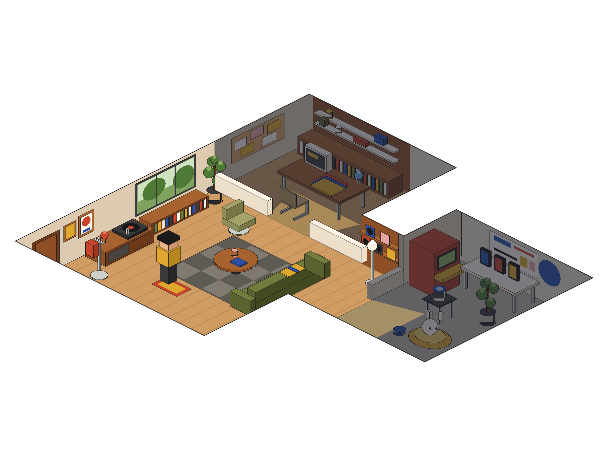

BUILD REFERENCE · READ ME FIRST
What to build, and in what order.
Everything on this page is current. The Exploration page holds the history. Full written brief: portfolio-handoff.md.
01 · SCREENS ON THIS PAGE
Home v3Final direction
Case studyStructure only, restyle
House overviewBehaviour only, restyle
Studio zoomBehaviour only, restyle
Lab zoomBehaviour only, restyle
"Restyle" means: keep the layout and flow, but use Home v3's look. No thick borders, no offset shadows.
02 · TOKENS
One typeface: Schibsted Grotesk.
page #F4EEE4
ink #1B1A17
muted #6B6458
red #C8442B
cobalt #2B4FA8
mustard #E0A72E
H1 · 76 / 0.95 · −4.5%700
H2 · 48 / 1.02 · −3.5%700
Lead · 22 / 1.5 · body 18 / 1.55400
Label · 13 caps · +0.16em600
Container 1280 · gutter 48 · sections 120–140px
03 · MILESTONES
1Fast view. Home v3 and one case study, with the house as a still poster.
2Static 3D house. Lazy-loaded after the page settles, crossfades over the poster; camera zoom between rooms.
3Ambient life. Character and pet routines, spinning turntable, looping screens.
4Click-to-task. Pick a song and the character walks over and swaps the record.
STACK
Astro · React Three Fiber + drei · Zustand · Blender to compressed GLB
04 · HOUSE PLAN (TOP VIEW, PLAN UNITS)
Studiox 0–14 · y 0–9 · work
Main roomx 0–18 · y 9–28 · about, music, contact
Labx 18–31 · y 4–20 · side projects
Empty notch = page surface. Dashed lines = low partitions with doorways.
Walls 4.2 units, only on back edges. The page is a surface at wall-top height with the plan cut out of it, so the front rim hides about 4.6 units of floor. Keep key objects on back walls. Layout is data (rooms, waypoints, hotspots), so it can change later without touching code.
05 · LOOK AND STATES (2D REFERENCE FOR THE 3D SCENE)
 Studio visited. Lab still dark.
Studio visited. Lab still dark.
 All lit. Also the hero poster.
All lit. Also the hero poster.

Arrival. Main room lit, the others dark, light through doorways.Studio visited. Lab still dark.All lit. Also the hero poster.Zoom ≈ 2.1×, room centred left of the info window; neighbours stay visible.
Hero poster first, live scene after load and idle; ~30 fps, paused off-screen.
Skip auto-load on slow network, Save-Data, low memory, reduced motion, ?mode=focus.
Main room turntable, window (about), record shelf, prints (talks), door (contact + CV).
Studio 3 folders (featured work), credenza (archive), pinboard (process).
Lab bench (Prototype Hub), arcade (pet game), voice gadget (conversational AI), pet.